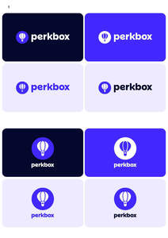

Trade Mark Journal No.2025/035 29 August 2025
UK00004246648 8 August 2025 (9,16,35,36)

- Class 9
- Computer software; Computer software platforms; Computer graphics software; Computer interface software; Computer game software; Computer games software; Computer software [programmes]; Computer software programs; Computer software packages; Computer telephony software; Interactive computer software; Software (Computer -), recorded; Computer software, recorded; Computer programs [downloadable software]; Programs (Computer -) [downloadable software]; Computer search engine software; Computer software downloadable from global computer information networks; Computer software to maintain and operate computer system; Computer software for producing financial models; Cards encoded to access computer software; Recorded computer programmes; Computer software for wireless content delivery; Computer software for processing digital images; Computer software concerned with children's education; Computer software designed to estimate resource requirements; Interactive entertainment software for use with computers; Computer software for audibly controlling a computer and the operation thereof; Computer games programmes downloaded via the internet [software]; Computer games programs downloaded via the internet [software]; Computer software for use in remote meter reading; Computer software to enable the searching of data; Computer software relating to the handling of financial transactions; Computer software for creating and editing music and sounds; Computer programmes for data processing; Computer software for use in medical decision support systems; Computer software to enhance the audio-visual capabilities of multimedia applications; Computer software to enable the transmission of photographs to mobile telephones; Computer software for controlling the operation of audio and video devices; Computer programmes for use in telecommunications; Computer programmes for interactive television and for interactive games and/or quizzes; Computer software to enhance the audio-visual capabilities of multimedia applications, namely, for the integration of text, audio, graphics, still images and moving pictures; Databases; Data terminals; Data processors; Data banks; Data switches; Data transmitters; Data cartridges; Computer databases; Databases (electronic); Electronic databases; Data transmission networks; Data communications hardware; Data recorded electronically; Optical data links; Mobile data apparatus; Data processing software; Mobile data receivers; Time data generators; Microcircuit data carriers; Recorded data files; Data processing apparatus; Data processing equipment; Data communications receivers; Data exchange units; Data conversion apparatus; Synchronous data units; Data compression software; Data transmission apparatus; Data transmitting apparatus; Data communications apparatus; Data entry terminals; Data exit terminals; Data processing programs; Data collection apparatus; Data capture apparatus; Data processing terminals; Data processing systems; Data communications software; Optical data carriers; Data media (Optical -); Optical data media; Data transmission cables; Magnetic data media; Data media (Magnetic -); Data switching apparatus; Magnetic data carriers; View data terminals; Data-processing apparatus; Data encryption apparatus; Data encoding apparatus; Recorded data [magnetic]; Computer database servers; Database management software; Electronic data processing equipment; Mobile data communications apparatus; Mouse [data processing equipment]; Scanners [data processing equipment]; Carriers for bearing data; Machine readable data carriers; Readers [data processing equipment]; Magnetic data carriers, recording discs; Data loggers and recorders; Instruments for surveying physical data; Memories for data processing equipment; Real-time data processing apparatus; Apparatus for the transmission of data; Apparatus for the processing of data; Data carriers containing stored typographic typefaces; Computer networking and data communications equipment; Computers for use in data management; Data processing equipment and accessories (electrical and mechanical); Data carriers for computers having software recorded thereon; Central processing units for processing information, data, sound or images; Interface cards for data processing equipment in the form of printed circuits; Credit cards; Optical cards; Encoded cards; Video cards; Telephone cards; Smart cards; Microchip cards; Graphics cards; PC cards; Memory cards; Cash cards [encoded]; Cards (Encoded magnetic -); Magnetically encoded cards; Magnetic encoded cards; Magnetic coded cards; Encoded magnetic cards; Coded bank cards; Printed cards [magnetic]; Plastic cards [encoded]; Encoded credit cards; Credit cards [encoded]; Cash cards [magnetic]; Magnetic credit cards; Credit cards [magnetic]; Magnetic payment cards; Magnetic identity cards; Magnetically encoded credit cards; Cards (Magnetic or encoded -); Magnetically encoded debit cards; Cards bearing electronically recorded data; Magnetic cards being computer software; Card readers for credit cards; Payment cards being magnetically encoded; Encoded cards for use in point of sale transactions; Encoded cards for use in relation to the electronic transfer of financial transactions; Electronic and magnetic ID cards for use in connection with payment for services; Electronic payment terminal; Magnetic payment cards; Payment cards being magnetically encoded; Payment terminals, money dispensing and sorting devices; Terminals for electronically processing credit card payments; Secure terminals for electronic transactions; Software for facilitating secure credit card transactions; Computer software relating to the handling of financial transactions; Card readers; Electronic card readers; Bar code readers; Readers (Bar code -); Magnetic strip readers; Readers (Optical character -); Optical character readers; Smart card readers; Magnetic encoded card readers; Magnetic coded card readers, None of the aforesaid goods relating to enterprise cloud solutions, namely, storage platforms and electronic data storage platforms.
- Class 16
- Manuals for computer software; Computer software operating manuals; Catalogues relating to computer software; Computer programmes (Paper tapes and cards for the recordal of -); Paper tapes and cards for the recordal of computer programmes; Data processing programmes in printed form; Cards; Reference cards; Flash cards; Gift cards; Filing cards; Record cards; Debit cards without magnetic coding; Credit cards without magnetic coding; Vouchers; Gift vouchers; Vouchers of value; Gift bags; Gift cards; Gift cartons; Gift boxes; Gift vouchers; Cardboard gift boxes; Paper gift bags; Cardboard boxes; Cardboard packaging; Cardboard cartons; Cardboard containers; Paperboard [cardboard]; Cardboard tubes; Tubes (Cardboard -); Packing cardboard containers; Boxes of cardboard; Collapsible cardboard boxes; Cardboard gift boxes; Cardboard shipping containers; Corrugated cardboard boxes.
- Class 35
- Data transcription; Data processing; Database management; Data entry and data processing; Computerised data processing; Computer data processing; Data processing verification; Business data analysis; Data management services; Data processing services; Data processing management; Electronic data processing; Computerised data management; Computerised data verification; Collection of data; Automated data processing; Administrative data processing; Systematization of data in computer databases; Compilation of data in computer databases; Computerized database management; Database management services; Computer database management; Provision of business data; Data compilation for others; Data collection [for others]; Business data analysis services; Compilation of business data; Data processing for businesses; Data-based stock control; Computerised data-base management; Compilation of computer databases; Computerized database management services; Analysis of market research data; Data-base management (Computerised -); Data processing for the collection of data for business purposes; Consultancy relating to data processing; Advisory services relating to data processing; Information services relating to data processing; Advertising services relating to data bases; Compilation of information into computer databases; Computer databases (Compilation of information into -); Computer databases (Systemization of information into -); Management and compilation of computerised databases; Compiling of information into computer databases; Business consultancy services relating to data processing; Advertising services provided via a data base; Advisory services relating to electronic data processing; Compilation and systematisation of information in databanks; Computerised point-of-sale data collection services for retailers; Commercial information agencies [provides business information, eg, marketing or demographic data]; Business information services provided on-line from a computer database or the internet; Providing business information, also via internet, the cable network or other forms of data transfer; Advice on the analysis of consumer buying habits and needs provided with the help of sensory, quality and quantity-related data; Promoting the goods and services of others through the distribution of discount cards; Sales promotion for others provided through the distribution and the administration of privileged user cards; Negotiation of commercial transactions for third parties; Arranging and concluding commercial transactions for others; Mediation and conclusion of commercial transactions for others; Advisory services for preparing and carrying out commercial transactions; Negotiation and conclusion of commercial transactions for third parties via telecommunication systems; Administration of a discount program for enabling participants to obtain discounts on goods and services through use of a discount membership card; Promoting the goods and services of others through the distribution of discount cards; Promoting the goods and services of others; Promoting the goods and services of others through the distribution of discount cards; Promoting the sale of goods and services of others by awarding purchase points for credit card use; Organisation, operation and supervision of loyalty schemes and incentive schemes; Organisation, operation and supervision of customer loyalty schemes; Management of customer loyalty, incentive or promotional schemes; Organisation and management of business incentive and loyalty schemes; Organization, operation and supervision of sales and promotional incentive schemes; Organisation, operation and supervision of sales and promotional incentive schemes.
- Class 36
- Computerised financial data services; Financial data base services; Financial database services relating to commodities; Financial database services relating to stocks; Financial database services relating to shares; Financial database services relating to foreign exchange; Issuing credit cards; Credit cards services; Issue of credit cards; Issuance of credit cards; Issuing of credit cards; Credit cards (Issuance of -); Provision of credit cards; Issuing stored value cards; Financial services related to the issuance of bank cards and debit cards; Processing payments made by charge cards; Insurance services relating to credit cards; Money transfer services utilising electronic cards; Financial services relating to credit cards; Financial services relating to bank cards; Issuance of credit and debit cards; Provision of prepaid cards and tokens; Processing electronic payments made through prepaid cards; Financial services for the management of credit cards; Processing of payments in relation to charge cards; Processing of payments in relation to credit cards; Rental, hire and lease of equipment for processing financial cards; Payment processing; Remote payment services; Bill payment services; Financial payment services; Automated payment services; Payment administration services; Electronic payment services; Collection of payments; Credit card payment processing; Payment transaction card services; Telegraphic remittance [payment] services; Credit card and payment card services; Processing payments made by charge cards; Payment and receipt of money as agents; Bill payment services provided through a website; Financial transfers and transactions, and payment services; Processing electronic payments made through prepaid cards; Financial management of reimbursement payments for others; Processing of payments in relation to charge cards; Processing of payments in relation to credit cards; Bank card, credit card, debit card and electronic payment card services; Providing multiple payment options by means of customer-operated electronic terminals available on-site in retail stores; Monetary transactions; Financial transactions; Electronic cash transactions; Arranging financial transactions; Electronic debit transactions; Electronic credit card transactions; Conducting of financial transactions; Processing credit card transactions for others; Processing charge card transactions for others; Automatic recording services for financial transactions; Processing debit card transactions for others; Execution of financial transactions (Services for the -); Financial transfers and transactions, and payment services; Provision of information relating to credit card transactions; Automated banking services relating to credit card transactions; Automated banking services relating to charge card transactions; Recording of inter parties transactions in respect of finance; Recording of inter parties transactions in respect of stocks; Recording of inter parties transactions in respect of shares; Issuing of vouchers; Issuing of cash vouchers; Travel vouchers (Issuing of -); Issuing of travel vouchers; Luncheon vouchers (Issuing of -); Issuing of luncheon vouchers; Processing of luncheon vouchers; Issuing of vouchers for meals; Issuing of vouchers for use as money; Issue of tokens, coupons and vouchers of value; Issuing of travellers' cheques and currency vouchers; Credit services relating to the provision of vouchers for meals; Financial services relating to the provision of vouchers for the purchase of goods; Issuing gift certificates which may then be redeemed for goods or services; Discount card services provided to young people for travel; Discount card services provided to young people for leisure purposes; Discount card services provided to young people for cultural purposes; Issuing of tokens of value in relation to incentive schemes; Issuing of tokens of value in relation to customer loyalty schemes; Issuing tokens of value; Issuance of tokens of value; Issue of tokens of value; Tokens of value (Issue of -); Issuing of tokens of value.
PERKBOX LIMITED